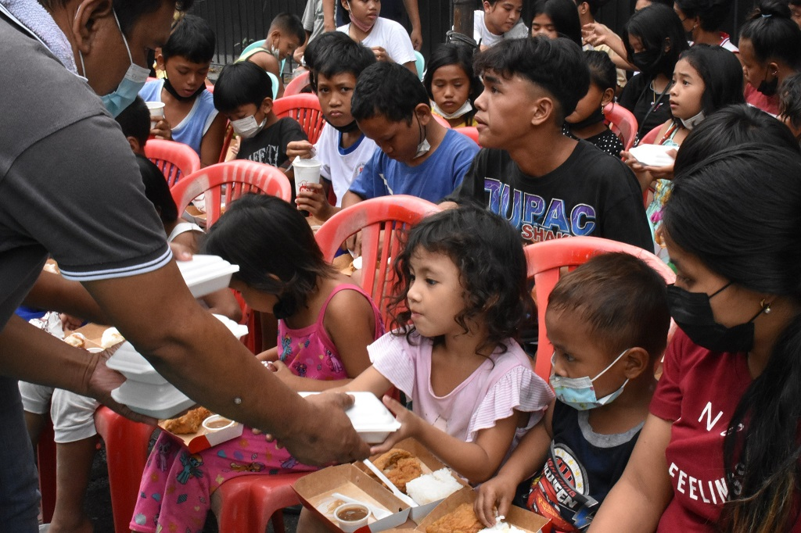
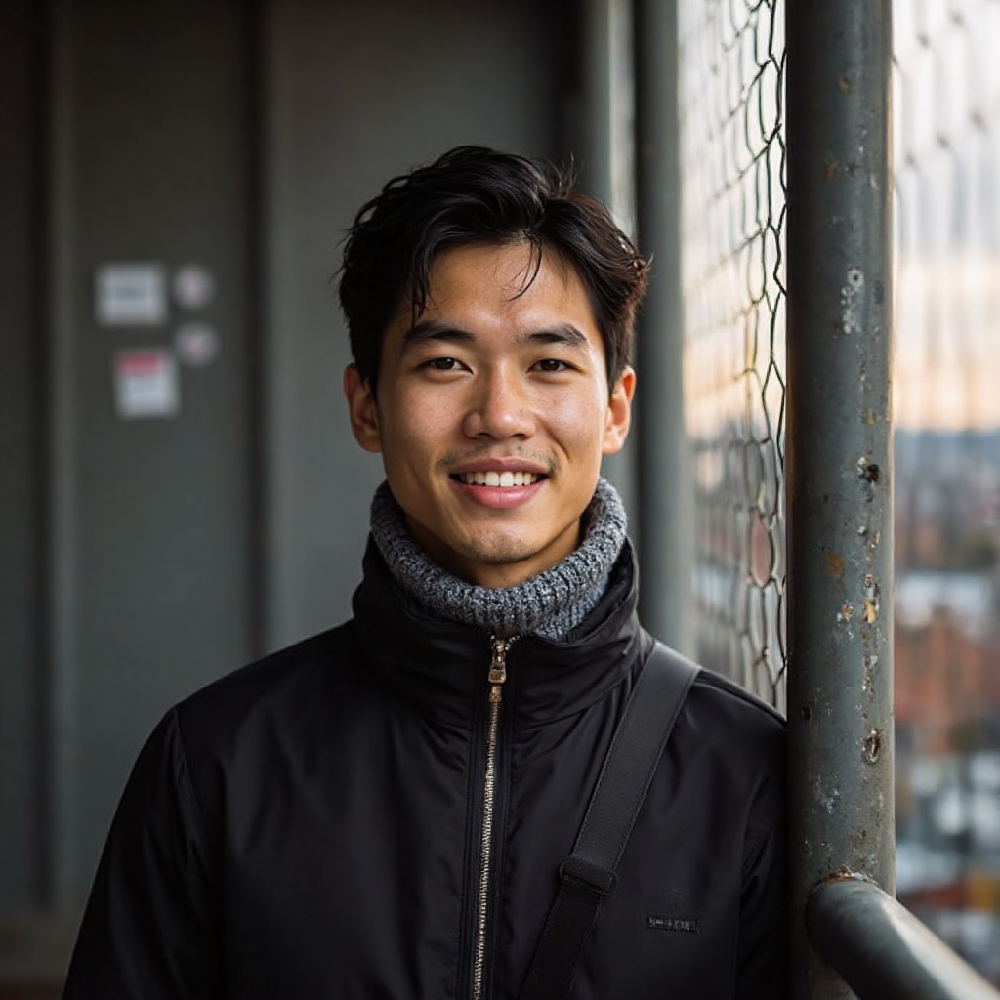

About EqualEd
EqualEd: Education Unlocked was created in 2020 by committed teachers and community organizers who saw firsthand the heartbreaking consequences of inequity in education in the time of COVID-19. What began as a ground-up, volunteer-led initiative in Davao City bridging gaps for challenged students to reach online learning became a nationwide movement committed to tearing down walls to quality education. Our co-founders, who themselves comprised a team of ex-teachers, social workers, and technologists, shared one vision: every Filipino child, wherever they are from and whatever their socioeconomic background is, deserves good education.
Today, EqualEd operates across multiple provinces in the Philippines, running mobile learning centers, digital literacy programs, and community education initiatives. We believe that education is not just about academic achievement—it's about empowering individuals to transform their communities and create a more equitable society. Our holistic approach combines traditional teaching methods with innovative technology solutions, ensuring that we meet learners where they are and provide support that fits their unique circumstances and needs.
Meet Our Founder
Christoff John D. Reonal
Founder & Executive Director
Christoff is a firm believer in educational parity who knows firsthand the disadvantages that limited learning materials bring. Growing up and schooling in Davao, he saw firsthand how economic status and place can really affect a child's capacity to receive quality education. With a Bachelor of Science in Computer Science, Christoff chose that he would spend his career applying technology in the service of a larger good. His web development experience and extensive presence in the Philippine education system most qualify him to head EqualEd's work of extending quality education to all Filipino children, especially those in marginalized sectors.
Organizations We Recommend
Partner Organizations & Resources
- Teach for the Philippines - Building the movement to eliminate educational inequity
- Save the Children Philippines - Championing children's rights and providing emergency education support
- Department of Education - Official government education resources and programs
- UNESCO - Global education initiatives and research
- World Bank Education - International development and education financing
- UNICEF Philippines - Child-focused education and development programs
Contact Us
Get in Touch
Location: Davao City, Davao Region, Philippines
Email: info@equaled.org.ph
Phone: +63 (82) 123-4567
Mobile: +63 917 123 4567
Office Address
123 Education Drive, Poblacion District
Davao City, Davao del Sur 8000
Philippines
Office Hours
Monday - Friday: 8:00 AM - 5:00 PM
Saturday: 9:00 AM - 3:00 PM
Sunday: Closed